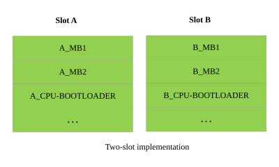
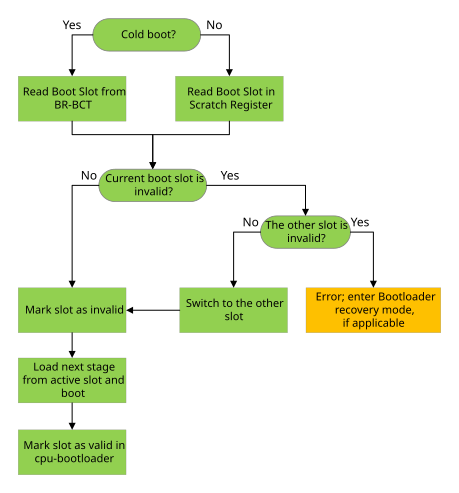

Update and Redundancy#
NVIDIA® Jetson™ Linux supports Bootloader update and redundancy on all Jetson platforms.
The Bootloader update process performs a safe Bootloader update and ensures that a workable Bootloader partition remains available during an update. It accomplishes this using A/B update, a feature that maintains two sets of Bootloader partitions, Slot A and Slot B, each of which is a complete set of the partitions that contain boot images.
Bootloader redundancy is enabled by default.
A/B Slot Layout#
The principle of shadow copying enables multiple placeholders. All of the placeholders but one hold backup copies. Each backup copy is a candidate to boot from. However, based on runtime decisions, the correct copy of the binary is loaded to continue with the boot process. These two shadow copies are commonly referred to as Slot A and Slot B. This two-slot implementation is as follows:

The diagram above shows the slot implementation in conceptual form.
A/B System Update#
Partition Selection#
A/B system updates use two sets of partitions (slots). Each slot has several attributes:
The slot that the running system booted from is called the current slot. The other slot is called the unused slot. The system exchanges the roles of the current and unused slot in the course of an update, or when the software fails repeatedly during or immediately after a boot.
The slot that the system will use the next time it boots is called the active slot. In “steady state” device the bootable slot is also the active slot. When the system is being updated it may be different.
A slot’s status attribute indicates whether the slot contains a system from which the device should be able to boot. When the system is running the current slot is bootable; the unused slot may have an older, identical, or newer version of the system, and may or may not be bootable.
The bootable slot is the slot whose status attribute is normal.
If a bootable slot fails to boot, Bootloader sets its status attribute as unbootable and switches the roles of the current and unused slots.
The formerly unused, now current, slot typically contains boot software that is one update old (if the device was just updated with nonfunctional software)
or current (if the former current slot has suffered data corruption).
Bootloader Implementation#
The A/B system uses the Scratch Register to store the slot status. It is used between the cpu-bootloader and early stage Bootloader. The early stage Bootloader runs the state machine to select the boot slot. It handles the update failure cases as follows:

Here is the process flow:
For NVIDIA® Jetson AGX Orin™, NVIDIA® Jetson Orin™ NX, and NVIDIA® Jetson Orin™ Nano: BootRom uses the BR-BCT to find the current slot for cold boot, and it uses the Scratch Register to find the current slot for warm boot. It marks the current slot status as
invalidand caches the current slot number, 0 (slot A) or 1 (slot B), with the status flag in scratch register 109. This slot number will be used by MB1, MB2, UEFI, or later stage loaders. When control reaches cpu-bootloader, it restores the status flag tovalidand saves to the scratch register 109.
If BootRom does not find a current slot, the device enters NVIDIA recovery mode.
Note
The Cpu-bootloader automatically updates the slot number in BR-BCT when the following conditions are met:
The slot number in BR-BCT does not match the current slot number in the scratch register.
The UEFI variable
AutoUpdateBrBctis set to 1, and this value is configured byL4TConfiguration.dtsin UEFI source.
Bootloader Scratch Register#
This section provides information about the Scratch register definition.
For NVIDIA® Jetson AGX Orin™, NVIDIA® Jetson Orin™ NX, and NVIDIA® Jetson Orin™ Nano#
Scratch register 109 layout |
||
|---|---|---|
Bits |
Contents |
|
31-6 |
Reserved |
|
5-4 |
Current slot number |
|
3-0 |
Boot slot status flag |
|
Where:
The current slot number is
0for slot A and1for slot B.The boot slot status flag uses bits to indicate the following slot statuses:
0: valid
1: invalidFor example, 0001b means slot A is invalid.
Partition Settings#
For NVIDIA® Jetson AGX Orin™, NVIDIA® Jetson Orin™ NX, and NVIDIA® Jetson Orin™ Nano#
The A/B partitions must use the following naming convention:
A_mb1B_mb1A_mb2B_mb2A_cpu-bootloaderB_cpu-bootloaderetc
The name of the partition that is being loaded is derived as follows:
partition_name = "<slot_value>"_<base_name>
slot value = "A" for slot 0
slot value = "B" for slot 1
Bootloader Version in QSPI Flash#
The bootloader version is stored in the A_VER and B_VER partitions, located in the QSPI flash. UEFI gets the version from these partitions and passes it to kernel.
Run the following command in the kernel to read the bootloader version via the sysfs node of DMI:
$ cat /sys/class/dmi/id/bios_version
The format of the output is <bsp_branch>.<bsp_major>.<bsp_minor>-gcid-<8 digits build number>. For example, the release 36.4.0:
$ cat /sys/class/dmi/id/bios_version
36.4.0-gcid-37537400
You can also use the following alternate ways to get the bootloader version:
Read the
fw_versionof the ESRT table:$ sudo cat /sys/firmware/efi/esrt/entries/entry0/fw_version
The output value is a decimal number, so you need to convert it to a hexadecimal number in the 0xAABBCC form where 0xAA is the release branch, 0xBB is the major version,
and 0xCC is the minor version. For example, the release 36.3.0:
2360064 = 0x240300 => [0x24].[0x03].[0x00] => 36.3.0
Read the bootloader version by using the
fwupdateutility:$ sudo fwupdate -l
The output includes the version that has the same format as the fw_version. For example, the release 36.3.0:
$ sudo fwupdate -l
system-firmware type, {bf0d4599-20d4-414e-b2c5-3595b1cda402} version 2360064 can be updated to any version above 2360063
2360064 = 0x240300 => [0x24].[0x03].[0x00] => 36.3.0
Update Bootloader#
The bootloader is updated by UEFI Capsule update. Refer to Manually Trigger the Capsule Update for more information.
Bootloader Tools#
NVIDIA provides tools for ease of use in the Bootloader update process.
Boot Control#
nvbootctrl is intended to be used for debugging, so it can be used to dump the slot information. You can also use it to set the active slot,
which forces the boot slot to change for the next boot.
To display the command usage, run the following command with no parameters:
$ sudo nvbootctrl
For more information, refer to Manually Modifying Boot Slots.
Bootloader Update Payload Generator#
The Bootloader Update Payload (BUP) is the payload that is packed into the Capsule payload. The BUP is generated by the
build_l4t_bup.sh host tool, which is kept with flash.sh in the Linux for Jetson Board Support Package (BSP).
This section describes procedures for generating a multi-spec BUP or a single-spec BUP.
A multi-spec BUP includes firmware binaries and BCT images for each supported Jetson device. When you run the updater, it uses the appropriate binary of each type for the device you are updating.
A single-spec BUP includes firmware binaries and BCT images for just one type of device. It is appropriate if you are updating just one type of Jetson device.
To generate a multi-spec BUP or a single-spec BUP, refer to Generating the Bootloader Update Payload (BUP).
The multi-spec procedure stores a BUP at each of these locations for the respective group of processors. The single-spec procedure stores a BUP at just one location for the appropriate type of processor.
Manually Modifying Boot Slots#
NVIDIA provides the nvbootctrl tool for testing and development purposes. However, you may wish to switch boot slots manually from user space.
To manually modify the boot slots#
Run the following command to switch to superuser mode:
$ sudo su
Run the following command:
# nvbootctrl <command>
Where
<command>is one of the values in the following table:
Command |
Description |
|---|---|
get-number-slots |
Prints the number of slots. |
get-current-slot |
Prints the currently running slot. |
dump-slots-info |
Prints information about the slots. |
set-active-boot-slot <slot> |
At the next boot, loads and executes |
verify |
Verifies the bootloader and the rootfs boot. |
is-rootfs-ab-enabled |
|
Note
<slot>is the zero-based slot number.The default setting for both slot 0 and slot 1 is “bootable”.
To show the current boot slot#
Run the following command:
# nvbootctrl get-current-slot
The command displays a single digit, 0 (slot A) or 1 (slot B).
To show the slot status#
Run the following command:
# nvbootctrl dump-slots-info
The command displays the status of both slots:
Current version: 36.0.0 Capsule update status: 0 Current bootloader slot: A Active bootloader slot: A num_slots: 2 slot: 0, status: normal slot: 1, status: normal
Sample Boot Log#
The boot slot is selected by BootRom, and MB1 and MB2 use the slot number. The message displayed from MB1 is available from an MB1 debug build that has messages enabled. Messages from MB2 are always available.
For NVIDIA® Jetson AGX Orin™, NVIDIA® Jetson Orin™ NX, and NVIDIA® Jetson Orin™ Nano#
The following sample log shows that slot 1 (slot B) is selected as the boot slot:
[0000.062] I> MB1 (version: 1.4.0.1-t234-54845784-08e631ca)
[0000.067] I> t234-A01-1-Silicon (0x12347) Prod
[0000.071] I> Boot-mode : Coldboot
[0000.075] I> Entry timestamp: 0x00000000
[0000.078] I> last_boot_error: 0x0
[0000.081] I> BR-BCT: preprod_dev_sign: 0
[0000.085] I> rst_source: 0xb, rst_level: 0x1
[0000.089] I> Task: SE error check
[0000.092] I> Task: Bootchain select WAR set
[0000.097] I> Task: Enable SLCG
[0000.099] I> Task: CRC check
[0000.102] I> Task: Initialize MB2 params
[0000.107] I> MB2-params @ 0x40060000
. . .
. . .
[0000.321] I> Loading MEMBCT
[0000.323] I> Slot: 1
[0000.325] I> Binary[0] block-66816 (partition size: 0x40000)
[0000.331] I> Binary name: MEM-BCT-0
. . .
. . .
I> MB2 (version: 0.0.0.0-t234-54845784-2db4d185)
I> t234-A01-1-Silicon (0x12347)
I> Boot-mode : Coldboot
I> Emulation:
I> Entry timestamp: 0x001e49d5
I> Regular heap: [base:0x40040000, size:0x10000]
. . .
. . .
I> Partition name: B_spe-fw
I> Size of partition: 589824
I> Binary@ device:3/0 block-118016 (partition size: 0x90000), name: B_spe-fw
I> strt_pg_num(118016) num_of_pgs(16) read_buf(0x40066650)
I> strt_pg_num(118032) num_of_pgs(512) read_buf(0x272e00000)
. . .
. . .
Generating the Bootloader Update Payload (BUP)#
A Bootloader Update Payload (BUP) is used to implement Bootloader update. It contains firmware binaries of each type needed to update a Jetson device.
This section describes the procedure for generating a single-spec BUP, which contains just one binary of each type and can be used to update just one Jetson device configuration.
There is also a procedure for generating a multi-spec BUP, which includes multiple firmware binaries and BCT images of each type, and can be used to update any supported type of Jetson device. When you run the updater, it uses the appropriate binary of each type for the device you are updating. Refer to Generating a multi-spec BUP for more information.
Before you generate BUPs, set the ToT_BSP environment variable to point to the complete path name of the BSPs for the current release (the Linux_for_Tegra/ directory)
in which flash.sh is stored.
Generating a Single-Spec BUP#
To create a BUP image that will be stored in a file for a carrier board that is not connected to the host system:
For a Jetson AGX Orin carrier board with the indicated values of
FAB,BOARDID,FUSELEVEL,BOARDSKU, andCHIP_SKU:$ cd ${ToT_BSP} $ sudo FAB=000 BOARDID=3701 FUSELEVEL=fuselevel_production BOARDSKU=0000 CHIP_SKU="00:00:00:D0" ./build_l4t_bup.sh jetson-agx-orin-devkit mmcblk0p1For a Jetson Orin NX carrier board with the indicated values of
FAB,BOARDID,FUSELEVEL,BOARDSKU, andCHIP_SKU:$ cd ${ToT_BSP} $ sudo FAB=000 BOARDID=3767 FUSELEVEL=fuselevel_production BOARDSKU=0000 CHIP_SKU="00:00:00:D3" ./build_l4t_bup.sh jetson-orin-nano-devkit mmcblk0p1
To create a BUP image for a board that is connected to the host system:
Place the target board into Force Recovery Mode.
Run the following commands:
$ cd ${ToT_BSP} $ sudo ./build_l4t_bup.sh <device> mmcblk0p1
Where <device> is:
For the Jetson AGX Orin:
jetson-agx-orin-devkitFor the Jetson Orin NX series and the Orin Nano series:
jetson-orin-nano-devkit
To create the PKC signed BUP image for a carrier board connected to the host system:
Place the target board into Force Recovery Mode.
Run the following commands:
$ cd ${ToT_BSP} $ sudo ./build_l4t_bup.sh -u <pkc_key_file> -v <sbk_key_file> <device> mmcblk0p1Where:
<pkc_key_file>is the RSA private key file for your board. It must be in the${ToT_BSP}/bootloaderdirectory, or you must specify its absolute pathname.<sbk_key_file>is the Secure Boot Key (SBK) key file for your board. It must be in the${ToT_BSP}/bootloaderdirectory, or you must specify its absolute pathname. This option must used with PKC key.<device>is:For the Jetson AGX Orin series:
jetson-agx-orin-devkitFor the Jetson Orin NX series and the Orin Nano series:
jetson-orin-nano-devkit
Generating a Specified Partition BUP#
Note
UEFI support for one partition image update is disabled in the default UEFI build. To enable this feature, complete the instructions in Single Image Capsule Update. To rebuild UEFI, refer to Building UEFI for NVIDIA Jetson.
To create a specified partition BUP image for a carrier board connected to the host system:
Place the target board into Force Recovery Mode.
Run the following commands:
$ cd ${ToT_BSP} $ sudo ./build_l4t_bup.sh --single-image-bup <partition_name> <device> mmcblk0p1
Where:
<partition_name>is the partition name specified in flash.cfg.
<device>is:
For the Jetson AGX Orin series:
jetson-agx-orin-devkitFor the Jetson Orin NX series and the Orin Nano series:
jetson-orin-nano-devkit
Note
The generated BUP payload name is <partition_name>_only_payload.
Here is an example to generate a partition BUP image of A_xusb-fw for Jetson Orin NX:
$ cd ${ToT_BSP}
$ sudo ./build_l4t_bup.sh --single-image-bup A_xusb-fw jetson-orin-nano-devkit mmcblk0p1
Generating a Multi-Spec BUP#
Run the following commands:
$ cd ${ToT_BSP} $ sudo ./l4t_generate_soc_bup.sh [-u <pkc_key_file>] [ -v <sbk_key_file> ] [-b <board>] [-p <option>] [-f <boardspec file>] [-e <boardspec entry>] [-d] <target_soc>Where:
<pkc_key_file>is the RSA private key file for your Jetson carrier board. If it is a relative pathname, it is interpreted relative to the${ToT_BSP}/bootloader/directory.<sbk_key_file>is the SBK key file for your board. It must be in the${ToT_BSP}/bootloaderdirectory, or you must specify its absolute pathname. This option must used with PKC key.<board>specifies one particular board for corresponding target_soc.<options>is a string of command line options to be passed toflash.shto generate the BUP. If the string contains whitespace characters, it must be enclosed in quotes.<boardspec file>specifies a user-provided board spec file.<boardspec entry>specifies a board spec entry in a user provided board spec file, such as “t23x_agx_bl_spec” in “jetson_board_spec.cfg”.-dcauses the script to run in debug mode, which keeps all boot firmware blob images inbootloader/signedandbootloader/multi-signed.<target_soc>is:For the Jetson AGX Orin series, the Orin NX series, and the Orin Nano series:
t23x
Note
Duplicated BUP entry is not allowed when customizing the BUP entries in the board spec files.
Location of Generated BUP Files#
Both procedures store the generated BUP(s) in the director(ies):
For the Jetson AGX Orin series, the Orin NX series, and the Orin Nano series:
${ToT_BSP}/bootloader/payloads_t23x
To Customize the BUP#
Currently, the UEFI Capsule update supports an optional update for a pre-defined list of partitions, and this optional update is completed
by packing or unpacking these images into the UEFI Capsule. Users can change the SKIP field settings between
“0” and “1” for an image in the t23x_bl_table in the bootloader/l4t_bup_gen.func file, which is in the ${ToT_BSP}/Linux_for_Tegra/
directory. This way, the corresponding image will be packed (or unpacked) into BUP and then into the UEFI Capsule.
For example, Add the ist-config into BUP:
'A_ist-config 1 1 0 0'
Unpack the ist-config to BUP:
'A_ist-config 1 1 0 1'
The list of images that support optional update:
eks
fsi-fw
ist-bpmp
ist-config
ist-ucode
tsec-fw
xusb-fw
Note
Update the EKB image for the eks partition only when user keys are added or removed.
Generating the Capsule Update Payload#
Currently, a Capsule update payload is used to implement the Bootloader update. This section provides information about how to generate a multi-spec Capsule payload, which contains multiple firmware binaries and BCT images of each type. The payload can be used to update any supported Jetson device. When you start the update, UEFI uses the appropriate binary of each type for the device you are updating.
Before you generate Capsule update payloads, set the ToT_BSP environment variable to point to the complete path name of the BSPs for the current release (the Linux_for_Tegra/ directory)
in which flash.sh is stored.
Generating a Multi-Spec Capsule Payload#
To generate a multi-spec BUP, refer to Generating a Multi-Spec BUP for more information.
Run the following commands to generate multi-spec Capsule payload:
$ cd ${ToT_BSP} $ ./generate_capsule/l4t_generate_soc_capsule.sh [-o <output file> [-i <input file>] [ --signer-private-cert <signer private cert> ] [ --other-public-cert <other public cert> ] [ --trusted-public-cert <trusted public cert> ] <target_soc>Where:
<output file>is the path and file name of the output Capsule image.<input file>is the path and file name of the input BUP payload.<signer private cert>specifies the OpenSSL signer private certificate filename. (By default, the public TestCert.pem is used.)<other public cert>specifies OpenSSL other public certificate filename. (By default, the public TestSub.pub.pem is used.)<trusted public cert>specifies OpenSSL trusted public certificate filename. (By default, the public TestRoot.pub.pem by default.)<target_soc>is:For the Jetson AGX Orin series, the Orin NX series, and the Orin Nano series:
t23x
For production, you must create or specify your own certificates to replace the test certificates, which include signer private cert,
other public cert, and trusted public cert. Without specifying your own certificates, UEFI Capsule update security is highly vulnerable.
Note
When specifying your own certificates, you must also rebuild UEFI with these certificates. The certificates are located in the
edk2/BaseTools/Source/Python/Pkcs7Sign/ directory of the UEFI source. Please refer to the edk2/BaseTools/Source/Python/Pkcs7Sign/Readme.md
for generating and replacing the certificates.
Here are the examples to generate multi-spec Capsule payloads for t23x:
Generate a multi-spec, Capsule payload for the AGX Orin series:
$ cd ${ToT_BSP} # For AGX Orin: $ sudo ./l4t_generate_soc_bup.sh -e t23x_agx_bl_spec t23x # For AGX Orin Industrial: $ sudo ./l4t_generate_soc_bup.sh -e t23x_agx_ind_bl_spec t23x $ ./generate_capsule/l4t_generate_soc_capsule.sh -i bootloader/payloads_t23x/bl_only_payload -o ./TEGRA_BL.Cap t234Generate a multi-spec, Capsule payload for the Orin NX series and the Orin Nano series:
$ cd ${ToT_BSP} $ sudo ./l4t_generate_soc_bup.sh -e t23x_3767_bl_spec t23x $ ./generate_capsule/l4t_generate_soc_capsule.sh -i bootloader/payloads_t23x/bl_only_payload -o ./TEGRA_BL.Cap t234
Use the fwupdtool to Trigger the Capsule Update#
To trigger the Capsule update with fwupdtool, run the following commands on the target:
Copy the generated Capsule payload to the target file system. For example:
$ scp user@<payload_host_ip>:${ToT_BSP}/TEGRA_BL.Cap /opt/ota_package/Initialize the
OsIndicationsUEFI variable:$ cd /sys/firmware/efi/efivars/ $ printf "\x07\x00\x00\x00\x00\x00\x00\x00\x00\x00\x00\x00" > /tmp/var_tmp.bin $ sudo dd if=/tmp/var_tmp.bin of=OsIndications-8be4df61-93ca-11d2-aa0d-00e098032b8c bs=12;sync
Get the
Device IDof theSystem Firmware:$ fwupdmgr get-devices
Trigger the Capsule update. Afterward, choose
yto reboot and finish the update:$ sudo fwupdtool install-blob <payload file> <Device ID>
Where <payload file> is the file path of Capsule payload. <Device ID> is obtained in step 3.
Here is an example to trigger Capsule update for AGX Orin:
$ sudo fwupdtool install-blob /opt/ota_package/TEGRA_BL.Cap a45df35ac0e948ee180fe216a5f703f32dda163f
Note
The fwupdtool does not support single partition image Capsule updates.
Use the Helper Script to Trigger the Capsule Update#
To trigger the Capsule update:
Copy the generated Capsule payload to the target file system.
Run the following command to trigger Capsule update:
$ nv_bootloader_capsule_updater.sh [-h|--help] -q <input file>
Where <input file> is the file path of Capsule payload.
Here is an example to trigger Capsule update for AGX Orin:
$ nv_bootloader_capsule_updater.sh -q /opt/ota_package/t23x/TEGRA_BL_3701_agx.Cap
Reboot the target system for updates to take effect.
Note
The helper script does not support single partition image Capsule updates.
Manually Trigger the Capsule Update#
The UEFI updates the non-current slot Bootloader when a Capsule update is triggered. The device boots from the updated non-current slot after the Capsule update has finished.
Copy the generated multi-spec Capsule payload to the
EFI/UpdateCapsuledirectory in theesppartition of the active boot media. Refer to Generating a Multi-Spec Capsule Payload for more information.
For a device that is booted from eMMC, copy the payload to the
esppartition on eMMC.For a device that is booted from NVMe, copy the payload to the
esppartition on NVMe.
Set the bit2 of the
OsIndicationsUEFI variable:$ cd /sys/firmware/efi/efivars/ $ printf "\x07\x00\x00\x00\x04\x00\x00\x00\x00\x00\x00\x00" > /tmp/var_tmp.bin $ sudo dd if=/tmp/var_tmp.bin of=OsIndications-8be4df61-93ca-11d2-aa0d-00e098032b8c bs=12;sync
Reboot the Jetson device. UEFI will use the Capsule payload to update the non-current slot Bootloader.
To check the
Capsule update status, run thenvbootctrlcommand:$ sudo nvbootctrl dump-slots-info
The output value of Capsule update status can be following:
0 - No Capsule update
1 - Capsule update successfully
2 - Capsule install successfully but boot new firmware failed
3 - Capsule install failed
Manually Sync Bootloader A/B Slots with the Capsule Update#
Bootloader A/B slots can be synced by applying the Capsule update on a non-current slot.
If the UEFI Capsule was previously successfully updated, the current slot boots up with the image from the Capsule. To update the non-current slot through Capsule Update, users must complete the steps below.
If the UEFI Capsule was not previously successfully updated, to ensure that slots A and B are updated with the same image, users must complete the following steps twice. For example, if the current slot is A, when you complete the following steps the first time, slot B is updated. After the devices boot up from slot B, when users complete the steps again, slot A will be updated with the Capsule. The device will now boot up from slot A.
Copy the Capsule payload that was used in step 1 in Manually Trigger the Capsule Update to the
EFI/UpdateCapsuledirectory in theesppartition of the active boot media.Set the bit2 of the
OsIndicationsUEFI variable.Reboot the Jetson device. UEFI uses the Capsule payload to update the non-current slot Bootloader.
To check the Capsule update status and current slot, run the
nvbootctrlcommand. The Capsule update status is success.
Manually Triggering the Single Partition Image Capsule Update#
Generate a specified partition BUP image. Refer to Generating a specified partition BUP for more information.
Generate a Capsule payload by the specified partition BUP image. Refer to Generating a Multi-Spec Capsule Payload for more information.
Here is an example to generate a Capsule payload of
A_xusb-fwfor t23x:$ cd ${ToT_BSP} $ ./generate_capsule/l4t_generate_soc_capsule.sh -i bootloader/payloads_t23x/A_xusb-fw_only_payload -o ./TEGRA_BL.Cap t234Customize the UEFI to enable the single image Capsule update. Refer to the Single Image Capsule Update for more information.
Copy the generated Capsule payload in step 2 to the
EFI/UpdateCapsuledirectory in theesppartition of the active boot media. Refer to the step 1 in Manually Triggering the Capsule Update for more information.Trigger the single partition image Capsule update. Refer to the Single Image Capsule Update for more information.
Users need to set the
FmpCapsuleSinglePartitionChainandOsIndicationsvariables.Set
FmpCapsuleSinglePartitionChainwith the desired boot chain to be updated (0: slot A, 1: slot B).Set the bit2 of the
OsIndications. Refer to the step 2 in Manually Triggering the Capsule Update for more information.
Here is an example to trigger
A_xusb-fwsingle image Capsule update to slot B on t23x, current slot is A. Refer to Manually Modifying Boot Slots for the command that shows current slot:$ cd /sys/firmware/efi/efivars/ $ printf "\x07\x00\x00\x00\x01" > /tmp/var_tmp.bin # In case to update chain A, the setting is: # $ printf "\x07\x00\x00\x00\x00" > /tmp/var_tmp.bin $ sudo dd if=/tmp/var_tmp.bin of=FmpCapsuleSinglePartitionChain-781e084c-a330-417c-b678-38e696380cb9 bs=5;sync $ printf "\x07\x00\x00\x00\x04\x00\x00\x00\x00\x00\x00\x00" > /tmp/var_tmp.bin $ sudo dd if=/tmp/var_tmp.bin of=OsIndications-8be4df61-93ca-11d2-aa0d-00e098032b8c bs=12;sync
Reboot the Jetson device. UEFI will use the single image Capsule payload to update the specified partition.
To verify the single partition image Capsule update status, check the value of the
/sys/firmware/efi/esrt/entries/entry0/last_attempt_statusfile after system boots up. 0 means that the verification was successful. For other values, check the error code:$ sudo cat /sys/firmware/efi/esrt/entries/entry0/last_attempt_status
Note
When single partition image Capsule update is complete, the Capsule update status in the output of nvbootctrl command is not reliable.